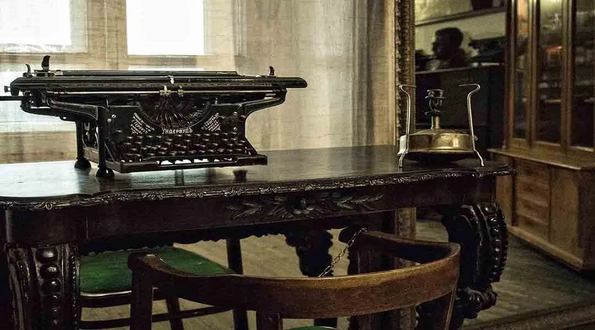

Экскурсия
Экскурсия по Булгаковскому Дому
Входной билет на ноябрь
Каждый час
12:00–20:00, каждый час по набору группы. В кассе открыт билет на ноябрь без фиксированного часа. Группы формируются на месте.
Гид показывает личные вещи, фотографии современников писателя и тайные комнаты музея. Группы собираются каждый час с 12:00 до 20:00. Для группы более пяти человек нужна предварительная бронь.
- Место сбора
- Музей-театр «Булгаковский Дом», Большая Садовая, 10, в арку, первый подъезд
- Длительность
- 40 мин
- Возраст
- 12+
- Условия
- От 750 ₽ за входной билет на экскурсию

На маршруте
